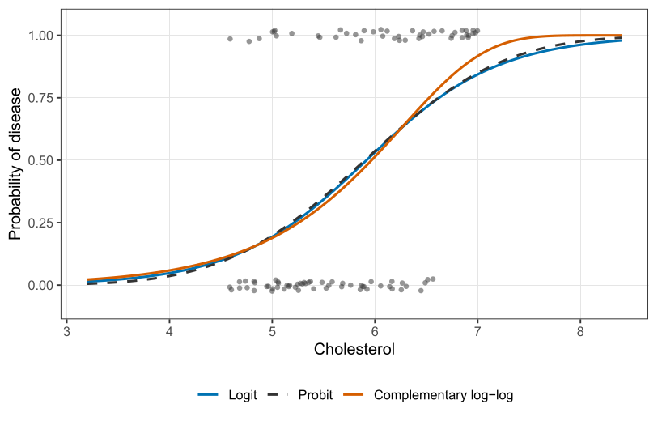

Paired comparisons, and how far a fit is from the data
Part of Generalised linear models · 4 questions on this topic · What links here
Paired comparisons, and how far a fit is from the data

| Part | Generalised linear models |
| Chapter | 5 of 6 in this part |
| Previous | Categorical responses |
| Next | Probability-integral residuals |
| Questions | 4 (1 practice, 3 concept) |
| Figures | 1 |
The addiction fit from the previous chapter is two linear predictors against the weak-willed baseline. This chapter reads those coefficients, then uses the same binary building block for matches between two teams, and then asks the question the deviance is for: how far are the fitted means from the observations, and when is a simpler model enough.
Reading the addiction model
Category 0 is weak-willed, category 1 is addiction by disease, category 2 is both. From the fitted predictors, \begin{align*} \log\frac{\hat p_1}{\hat p_0} &=-1.161+0.437\,\mathrm{female}+0.0299\,\mathrm{age}+1.622\,\mathrm{university},\\ \log\frac{\hat p_2}{\hat p_0} &=-2.016+0.288\,\mathrm{female}+0.0421\,\mathrm{age}+1.067\,\mathrm{university}. \end{align*} A female, relative to a male with the same age and the same university status, has odds of disease-versus-weak-willed multiplied by \exp(0.437)=1.55. The z statistic is 2.25, so that contrast is past the usual 5% line. The same comparison for both-versus-weak-willed is \exp(0.288)=1.33, with z=1.30, which we would not call a detected sex difference.
Age is a per-year coefficient. \exp(0.0299)=1.03 looks small until you remember that the unit is one year. Ten years is 10\times 0.0299=0.299 on the log-odds scale, and \exp(0.299)\approx 1.35, not 1.03. Both age slopes are clearly away from zero (z=4.80 and 6.17). The per-year sentence and the per-decade sentence are the same fit.
Being a university academic multiplies the odds of disease-versus-weak-willed by \exp(1.622)=5.06, and the odds of both-versus-weak-willed by \exp(1.067)=2.91. Those are the largest contrasts in the table (z=6.40 and 3.69).
Any other pair is the difference of two rows. The log-odds of both versus disease alone use \log\frac{p_2}{p_1} =(-2.016+1.161)+(0.288-0.437)\,\mathrm{female}+(0.0421-0.0299)\,\mathrm{age}+(1.067-1.622)\,\mathrm{university}. You do not refit. The multinomial dispersion stays 1 as long as each person makes one independent choice of one category.
Bradley–Terry
A head-to-head result is still a binary outcome. The Bradley–Terry model gives team j a skill \lambda_j and says \mathrm{odds}(j\text{ beats }k)=\exp(\lambda_j-\lambda_k). Swap the labels and the odds invert: \mathrm{odds}(k\text{ beats }j)=\exp(\lambda_k-\lambda_j)=\frac{1}{\exp(\lambda_j-\lambda_k)}. The model is forced by that consistency. Only differences of skills are identified, so one team can be set to zero and everyone else is measured from them. Software often sets the alphabetically first team to zero. We fit that, then shift the origin so the weakest team is zero. The ranking is unchanged.
Home advantage, or White moving first in chess, is one extra parameter \alpha on the log-odds of the home side: \mathrm{odds}(j\text{ beats }k\text{ at home})=\exp(\lambda_j-\lambda_k+\alpha), and the away fixture puts -\alpha on j. Each match contributes a Bernoulli likelihood with success probability given by that odds. Maximum likelihood is ordinary.
The 2024 NRL table, regular season through 11 September, with the Tigers shifted to zero, is
| team | \hat\lambda | team | \hat\lambda |
|---|---|---|---|
| Storm | 2.587 | Knights | 1.222 |
| Panthers | 2.192 | Dragons | 1.053 |
| Roosters | 1.962 | Dolphins | 0.985 |
| Cowboys | 1.738 | Broncos | 0.881 |
| Sharks | 1.669 | Warriors | 0.827 |
| Bulldogs | 1.594 | Rabbitohs | 0.510 |
| Eagles | 1.430 | Titans | 0.483 |
| Raiders | 1.253 | Eels | 0.310 |
| Tigers | 0 |
Home advantage is \hat\alpha=0.3957. The odds of winning at home, for any team against a given opponent, are \exp(0.3957)=1.49 times the odds of winning the same match away. That gap is large enough to overturn some neighbouring pairs. The Dolphins sit above the Broncos by 0.985-0.881=0.10, which is less than 0.40, so the Broncos at home are the favourites against the Dolphins. The same arithmetic applies to the Warriors at home against the Broncos.
The odds that the Panthers beat the Roosters at home are \exp(2.1915-1.9623+0.3957)=\exp(0.625)=1.87. Odds of 1.87 are a probability of 1.87/(1+1.87)\approx 0.65. The official ladder had the Sharks above the Cowboys on for-and-against. This fit has the Cowboys above the Sharks, because it credits who was beaten, not only how many. That is the point of a skill parameter.
A draw can be coded as half a win and half a loss, which says the two teams were equal that day, without adding a third multinomial outcome. If the competition itself scores a draw as one point and a win as three, as in the English Premier League, the honest code is one third of a win rather than one half. We will not build the three-outcome model unless draws are common and meaningful.
Deviance
McCullagh and Nelder’s sentence is the right one: fitting a model replaces the data y_1,\ldots,y_n by fitted means \hat\mu_1,\ldots,\hat\mu_n that depend on fewer parameters than there are observations. A model with n parameters can repeat the sample exactly and then cannot predict anything else. The saturated fit is the baseline you compare with, not the fit you report.
The deviance is twice the drop in log-likelihood from the saturated fit to the model you actually fitted: D({\boldsymbol{y}};\hat{\boldsymbol{\mu}})=2\bigl\{\ell({\boldsymbol{y}};{\boldsymbol{y}})-\ell(\hat{\boldsymbol{\mu}};{\boldsymbol{y}})\bigr\}, up to the dispersion, which scales it. On the observation scale a residual of 5 is not the same thing for a Poisson mean of 2 and a Poisson mean of 50. The likelihood already knows that. For the families we have been using, the deviance contributions add up as follows. For the normal, \phi=\sigma^2, D=\sum_{i=1}^n(y_i-\hat\mu_i)^2, the residual sum of squares, because the factor of 2 cancels the \tfrac12 in the normal log-density. For the Poisson, D=2\sum_{i=1}^n\left\{y_i\log\frac{y_i}{\hat\mu_i}-(y_i-\hat\mu_i)\right\}. For a binomial count of y_i successes out of m_i, with fitted mean count m_i\hat p_i, D=2\sum_{i=1}^n\left\{y_i\log\frac{y_i}{m_i\hat p_i}+(m_i-y_i)\log\frac{m_i-y_i}{m_i(1-\hat p_i)}\right\}. The gamma deviance, in the mean-and-variance parameterisation \mathrm{Var}=\phi\mu^2, is D=2\sum_{i=1}^n\left\{-\log\frac{y_i}{\hat\mu_i}+\frac{y_i-\hat\mu_i}{\hat\mu_i}\right\}. These are not interchangable across families. A smaller deviance is a closer fit only inside one family. Two non-nested models, such as a logit and a probit, have no likelihood-ratio test. AIC is the comparison that remains: deviance plus twice the number of parameters, up to the usual constants.
Three links, one cholesterol slope
Sex drops out, as we already found. Cholesterol alone, three links:
chol_file <- "data/cholest.csv"
if (!file.exists(chol_file)) {
stop("Could not find data/cholest.csv. Set the working directory to the book folder.")
}
chol <- read.csv(chol_file)
for (lnk in c("logit", "probit", "cloglog")) {
fit <- glm(disease ~ cholesterol, data = chol, family = binomial(link = lnk))
cat(lnk, "null", fit$null.deviance, "on", fit$df.null, "df,",
"residual", fit$deviance, "on", fit$df.residual, "df,",
"AIC", AIC(fit), "\n")
}binomial logit: null 137.63 on 99 df, residual 114.04 on 98 df, AIC 118.04
binomial probit: null 137.63 on 99 df, residual 114.12 on 98 df, AIC 118.12
binomial cloglog: null 137.63 on 99 df, residual 111.90 on 98 df, AIC 115.90The null deviance does not depend on the link. It is the intercept-only model, one probability for everyone. Logit and probit are not separable on this sample.
In Figure 1 the solid and dashed curves sit on each other. Complementary log-log has the smaller deviance and the smaller AIC. It rises more slowly and then more steeply, and it picks up the high-cholesterol ones a little better. We cannot test that improvement. The models are not nested. There is no constraint on the logit coefficients that turns the fitted curve into a probit.
Analysis of deviance
For nested models the difference in scaled deviance, deviance divided by \phi, is referred to a chi-squared law if \phi is known, and to an F law if \phi is estimated from the same data. That is the GLM version of ANOVA, and anova on a glm object is doing it even though the name still says ANOVA. If the columns of {\color{blue}\boldsymbol{X}} are not orthogonal, the order of entry matters. A sequential p-value is the test of dropping that term while keeping everything listed above it, and nothing listed below it.
Myers and Montgomery’s wafer experiment is a 2^4 factorial with no replication: sixteen runs, resistivity, which is positive and right-skewed. The family is gamma and the link is log, not the canonical inverse, because no corner of the design should send resistivity to infinity. A four-factor interaction would use sixteen parameters and fit the sample perfectly. The largest model we can actually look at stops at the three-factor interactions:
need <- function(pkg) {
if (!requireNamespace(pkg, quietly = TRUE)) {
install.packages(pkg, repos = "https://cloud.r-project.org")
}
suppressPackageStartupMessages(library(pkg, character.only = TRUE))
}
need("faraway")
data(wafer, package = "faraway")
wafer$y <- wafer$resist
fit3 <- glm(y ~ x1 * x2 * x3 * x4 - x1:x2:x3:x4,
data = wafer, family = Gamma(link = "log"))
fit2 <- glm(y ~ (x1 + x2 + x3 + x4)^2,
data = wafer, family = Gamma(link = "log"))
anova(fit2, fit3, test = "F")
fit1 <- glm(y ~ x1 + x2 + x3 + x4,
data = wafer, family = Gamma(link = "log"))
anova(fit1, fit2, test = "F")
summary(fit1)
fit0 <- glm(y ~ x1 + x2 + x3, data = wafer, family = Gamma(link = "log"))
coef(summary(fit0))The sequential table is not how we choose the model. The last three-factor term has a sequential p-value of 0.69, but that number is only the test of that one interaction with every earlier term retained. We do not want to keep one three-factor interaction and delete its neighbours. We want all four of them in, or all four out.
The three-factor model has residual deviance 0.0084 on 1 degree of freedom. The two-factor model has residual deviance 0.0339 on 5 degrees of freedom. The difference is 0.0255 on 4 and 1 degrees of freedom: F=0.76,\qquad p=0.68. The three-factor terms can go. Comparing main effects with the two-factor model gives F=2.23 on 6 and 5 degrees of freedom, p=0.20. The pairwise products can go as well. Among the four main effects, x_4 has t=-1.10. Dropping it leaves
(Intercept) 5.4155
x1+ 0.1211
x2+ -0.2998
x3+ 0.1824so the fitted mean, with each x coded +1 at its high level, is \hat\mu=\exp(5.4155+0.1211\,x_1-0.2998\,x_2+0.1824\,x_3). A quoted value of the x_2 coefficient is -0.2981. The coefficient table, which is the fit, says -0.2998. We use the table.
We go backwards on purpose. Forward selection can drop x_4 at the first step because its main effect is small, and then never see that x_4 changes the effect of the others. Starting from the largest model you can fit, and deleting groups of terms, is the protection against that.
Residuals are not y-\mu
A coin with p=0.7 that lands heads did not commit an error of 0.3. A fair coin commits an “error” of 0.5 no matter which face appears, if error means y-\mu. And a count of 7 when you expected 2 is not the same failure as a count of 45 when you expected 50, even though both are five away. The likelihood of a Poisson 2 producing a 7 is not the likelihood of a Poisson 50 producing a 45.
The Pearson residual divides by the estimated standard deviation: r_P=\frac{y-\hat\mu}{\sqrt{\hat\phi\, V(\hat\mu)}}. For a binary observation with \hat p=0.7, \frac{1-0.7}{\sqrt{0.7\times 0.3}}=0.655, \qquad \frac{0-0.7}{\sqrt{0.7\times 0.3}}=-1.53. Landing tails is the larger Pearson residual. At \hat p=0.5 the two residuals are +1 and -1. For Poisson counts, with \phi=1, expecting 2 and seeing 7 gives (7-2)/\sqrt{2}=3.54. Expecting 50 and seeing 45 gives (45-50)/\sqrt{50}=-0.71. The unit is fairer. The sign is still symmetric: 55 instead of 45 would flip the sign and keep the magnitude, and a Poisson distribution is not symmetric.
The deviance residual takes one observation’s contribution d_i to D and attaches the sign of y_i-\hat\mu_i: r_D=\mathrm{sign}(y_i-\hat\mu_i)\sqrt{d_i}. At \hat p=0.7 the binary deviance residuals are +0.844 and -1.55. At \hat p=0.5 they are \pm 1.177, not \pm 1. For the Poisson, seeing 7 when expecting 2 gives \sqrt{2\bigl\{7\log(7/2)-(7-2)\bigr\}}=2.75, and seeing 45 when expecting 50 gives -0.72. The two deviations of five are no longer equal in magnitude once the likelihood, rather than the variance alone, is scoring them. That is the reason to prefer r_D when the distribution is skewed.
Plot either residual against the linear predictor, or against the fitted mean. For a continuous response you are looking for a flat, pattern-free scatter. For a binary response you will not get one. Every success lies on the curve 1-\hat p, and every failure lies on -\hat p, so the plot is two bands. A Poisson plot bands once for each integer that appears in the sample. The bands are the support of the distribution, not a missed covariate. Training your eye to ignore them is possible and unreliable. The probability-integral-transform residual, which turns a discrete fitted distribution back toward a uniform sample, is the next chapter.
Compute \exp(\hat\lambda_{\mathrm{Storm}}-\hat\lambda_{\mathrm{Sharks}}+\hat\alpha) from the table above, and convert the odds to a probability. Do the same for the Cowboys at home against the Knights.
Explain why the logit, probit, and complementary log-log cholesterol fits cannot be compared by a likelihood-ratio test, and what the three AIC values are allowed to say instead.
In the wafer analysis, the sequential p-value on
x2:x3:x4is 0.69. Say precisely which model is being compared with which, and why that is not the test of “are the three-factor interactions needed?”.For a Poisson mean of 50, the Pearson residual of y=55 is +0.71. Explain why the deviance residual of y=55 is not +0.72.
Questions on this topic
Open a question to attempt it. Its worked answer is folded away at the bottom of the page.
| Question | Source | Answer |
|---|---|---|
| Q34. Deviance and model adequacy | Practice set | ✓ |
| C26. Bradley–Terry | Concept check | ✓ |
| C29. Saturated model and deviance | Concept check | ✓ |
| C30. Significance is not adequacy | Concept check | ✓ |
What links here
Pages (3)
- Introduction to generalised linear models — via deviance
- Categorical responses — via residual deviance
- How to use the final preparation — via deviance
Questions and answers (4)
- Practice set: Q34
- Final preparation: Question 19
- Concept checks: C26 · C29